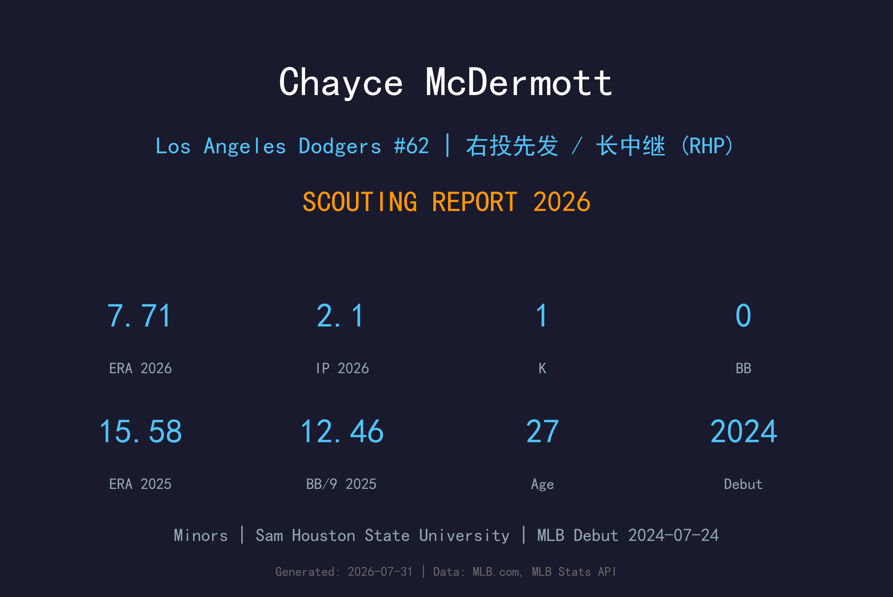
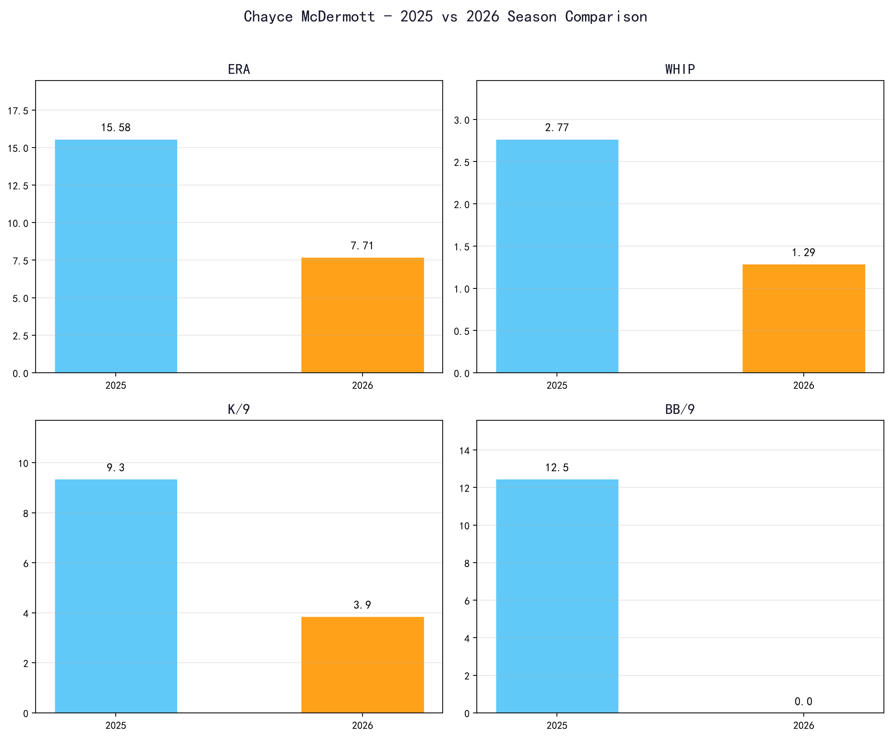
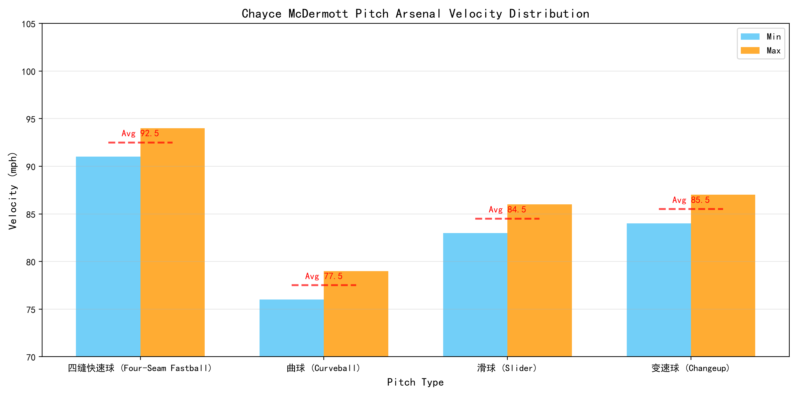
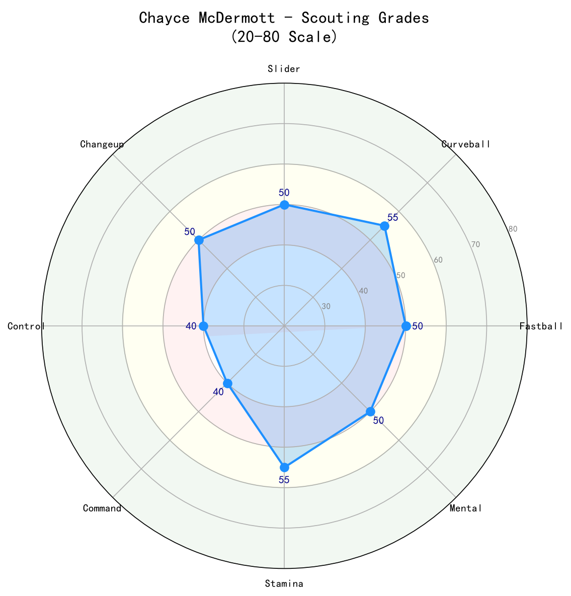

Los Angeles Dodgers #62 | 右投先发 / 长中继 (RHP) | Minors

Chayce McDermott 是一名在大联盟已有初体验的右投，2024 年 7 月 24 日于巴尔的摩金莺完成首秀。2025 年在金莺短暂登板表现挣扎后，2026 年转战洛杉矶道奇体系，目前于小联盟持续调整。
McDermott 的球风属于控球型右投，配球以快速球搭配多种变化球为主。他的身材条件不算突出，但具备吃下局数的能力与比赛智慧。在金莺的小样本（8.2 局 ERA 15.58）不能代表真实实力，反而显示他在适应大联盟节奏时遇到挑战。
加盟道奇后，McDermott 的首要任务是在 AAA 找回控球节奏，争取成为道奇轮值深度或长中继选项。他的 下限 是一名可以上下大联盟的 sixth starter / swingman。
McDermott 在大学时期是 Sam Houston State 的主力投手，展现出优秀的控球与比赛节奏，为进入职业棒球打下坚实基础。
McDermott 在 2021 年选秀中被巴尔的摩金莺选中。他在金莺农场体系中逐步攀升，以稳定先发与长局数能力著称。
2024 年 7 月 24 日，McDermott 登上大联盟完成首秀。虽然机会有限，但他终于踏上最高舞台，积累了宝贵经验。
McDermott 加入道奇组织，为球队提供轮值深度。在道奇教练团体系下，他有机会重塑自己的配球策略与球路组合。

📈 上图为近三年核心数据趋势。柱状图高度代表该年度表现，便于快速比较球员状态的上升或下滑。
| 赛季 | G | GS | W-L | ERA | IP | K | BB | WHIP | K/9 |
|---|---|---|---|---|---|---|---|---|---|
| 2025 | 4 | 1 | 0-1 | 15.58 | 8.2 | 9 | 12 | 2.77 | 9.35 |
| 2026 | 2 | 0 | 0-0 | 7.71 | 2.1 | 1 | 0 | 1.29 | 3.86 |

⚾ 上图为各球种球速区间（蓝=最低球速，橙=最高球速，红线=平均值）。球速差与位移差越大，打者越难锁定单一球路。
91-94 mph
McDermott 的速球球速不突出，主要依靠控球与角度来压制打者。他需要精准地把球投到好球带边缘，避免被强打者坐待中心球。
76-79 mph
他的主要变化球之一，具备不错的大弧度下坠。在两好球后用来诱导追打，但需要更稳定的落点控制。
83-86 mph
对付右打者的重要武器，横向位移可制造 软弱击球。2025 年小样本中控球不稳，导致这颗球未能发挥应有效果。
84-87 mph
对付左打者的关键变化球。若能改善速度差与放球点一致性，将显著提升他面对左打时的生存能力。
2025 年在金莺的 8.2 局中送出 12 次保送，BB/9 高达 12.46，这是他表现崩盘的主因。无论球路品质如何，无法把球投进好球带都会让自己陷入被动。加盟道奇后，重建控球信心是当务之急。
2025 年 8.2 局与 2026 年 2.1 局的样本都极小，不能据此判定 McDermott 的真实实力。他在小联盟可能有更稳定的数据，只是在大联盟舞台上尚未找到节奏。
McDermott 拥有四缝线、曲球、滑球与变速球四种球路，理论上足以担任后端先发或长中继。问题不在球种数量，而在执行稳定性。道奇的投教团队擅长改造这类控球型投手。
他的最佳角色可能是 swingman：在先发轮值需要深度时顶上，或在牛棚需要 long relief 时吃下 2-3 局。这种角色对控球和体能都有要求，正是 McDermott 需要证明的地方。

具备多种球路与吃局数能力，但控球在大联盟小样本中崩盘。能否在道奇体系下找回节奏，将决定他是否能在 MLB 站稳脚跟。
C+ 级 / 轮值深度/长中继候选人
McDermott 的 2026 年目标是在 AAA 稳定出赛，把保送率压回生涯平均水平。若能找回大学时期的控球感觉，他有机会在道奇伤病潮或轮值深度不足时获得上大联盟的机会。
2026 下半季：在 AAA 稳定先发，争取 100+ 局，ERA 控制在 4.50 以下。
2027：有机会以 sixth starter / long relief 身份进入道奇大联盟名单。
2028+：若控球稳定，可成为道奇轮值深度与牛棚长局数的重要选项。
Chayce McDermott 出生于美国加州，大学时期是 Sam Houston State University 的当家投手。他在 2021 年选秀中被巴尔的摩金莺选中，在金莺农场体系中逐步成长为具有轮换深度的右投。
2024 年 7 月 24 日，McDermott 终于踏上大联盟舞台。然而后续机会有限，表现也未能延续小联盟的稳定性。2026 年他加入洛杉矶道奇，希望在这座以投教闻名的组织中重新证明自己。
场外，McDermott 以沉稳与善于学习著称。他积极接受教练团改造，专注于恢复大学时期的控球优势。对道奇而言，他是低风险、可能中回报的轮值深度投资。